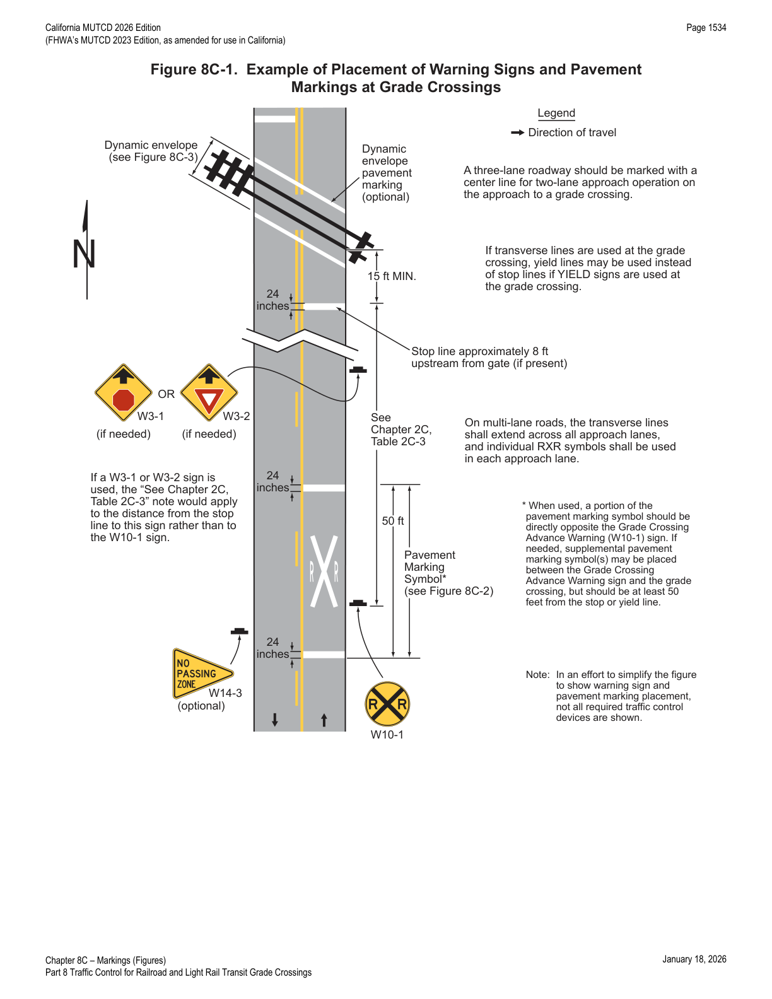
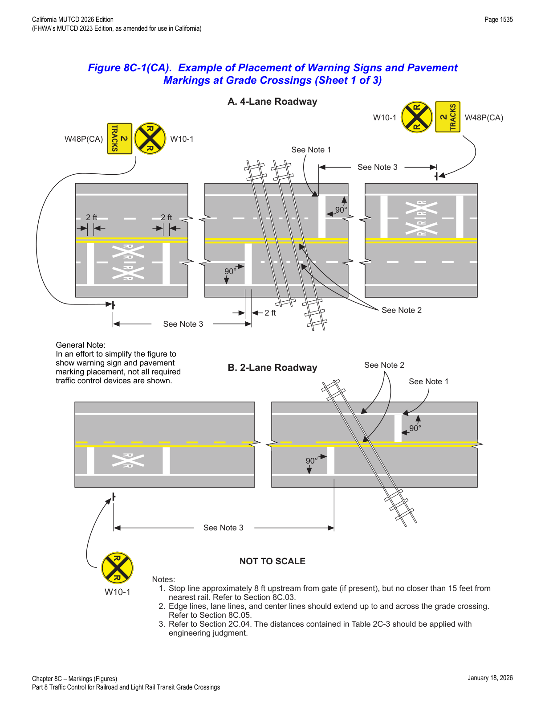
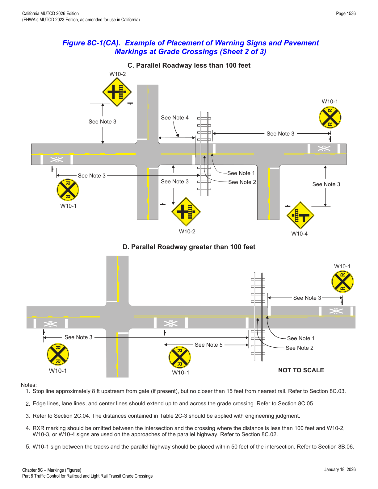
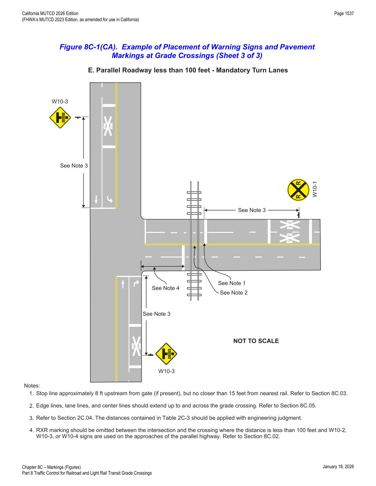
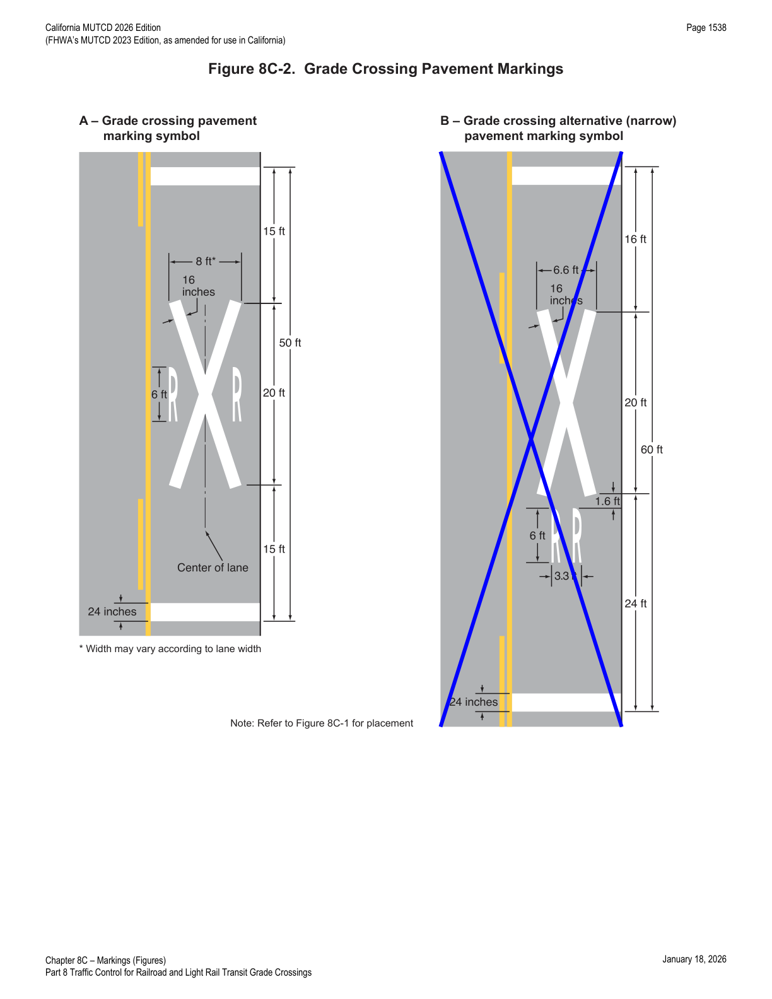
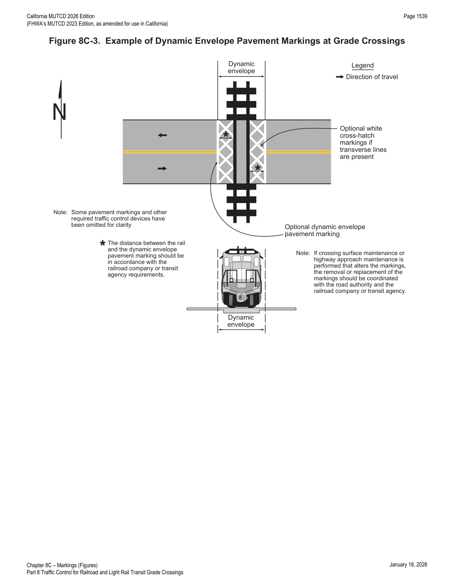
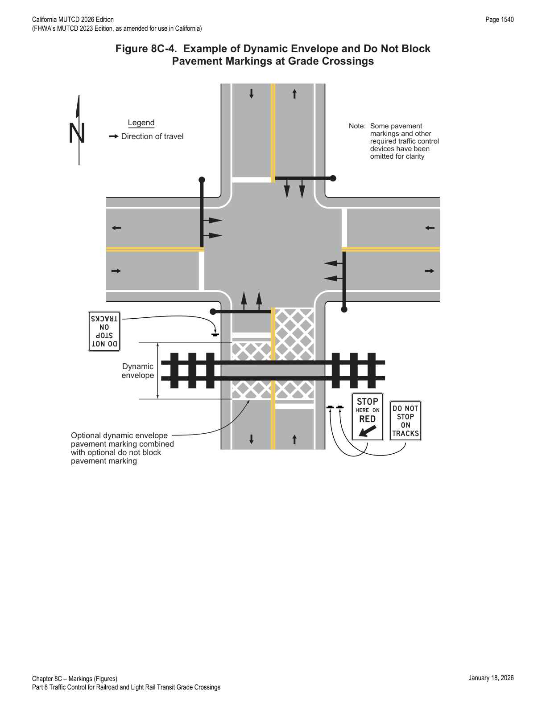
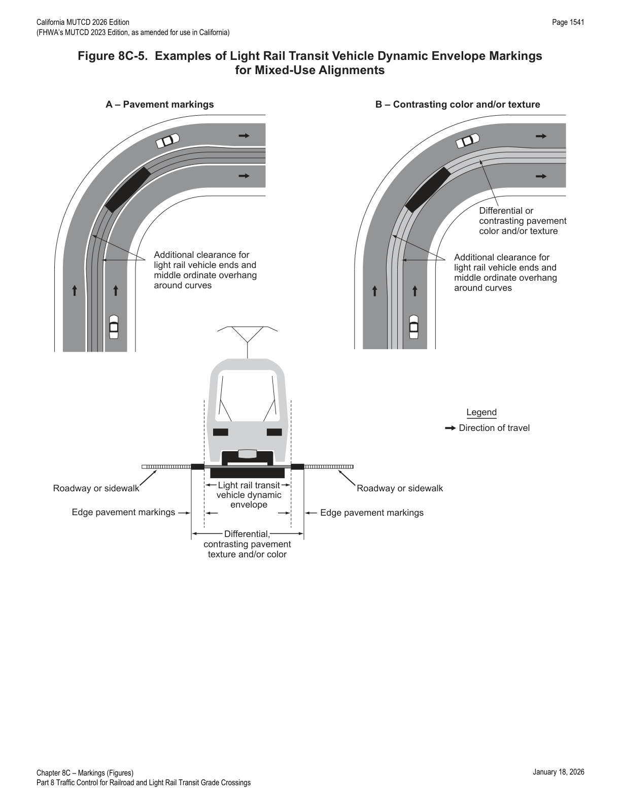

Part 8 · Traffic Control for Railroad and Light Rail Transit Grade Crossings · Chapter 8C
Markings
Covers the RXR pavement marking symbol, stop and yield lines, lane-use arrow restrictions, edge/lane/center line treatment, and dynamic envelope and do-not-block markings used at highway-rail and highway-LRT grade crossings.
8C.01Purpose and Application
- 01Passive traffic control systems, consisting of signs and pavement markings only, identify and direct attention to the location of a grade crossing and advise road users to reduce their speed or stop as necessary to yield to any rail traffic occupying, or approaching and in proximity to, the grade crossing.
- 02Signs and pavement markings regulate, warn, and guide road users so that they, as well as LRT vehicle operators on mixed-use alignments, can take appropriate action when approaching a grade crossing.
- 03Unless otherwise provided in this Chapter, the provisions of Part 3 apply to the design and location of pavement markings at grade crossings.
8C.02Grade Crossing Pavement Markings
- 01On paved roadways, grade crossing pavement markings shall consist of an X, the letters RR, a no-passing zone marking (on two-lane, two-way highways with center line markings complying with Section 3B.01), and certain transverse lines, with detailed dimensions as shown in Figures 8C-1, 8C-1(CA), and 8C-2 Example A.
- 01aThe grade crossing advance warning pavement marking — consisting of an X, the letter R on each side of the X, and a transverse line before and after the X — is referred to as an "RXR marking."
- 02Except as provided in Paragraphs 03 and 04, grade crossing pavement markings shall be placed in each approach lane on all paved approaches to highway-rail grade crossings where signals or automatic gates are located, and at all other grade crossings where the posted or statutory highway speed is 40 mph or higher.
- 03Grade crossing pavement markings shall not be required at highway-rail grade crossings where the posted or statutory highway speed is less than 40 mph if the Diagnostic Team determines that other installed devices provide suitable warning and control.
- 04Grade crossing pavement markings shall not be required at highway-rail grade crossings in urban areas if the Diagnostic Team determines that other installed devices provide suitable warning and control.
- 05Grade crossing pavement markings shall be placed in each approach lane on all paved approaches to highway-LRT grade crossings where a Crossbuck (R15-1) sign, flashing-light signals, or automatic gates are placed at the grade crossing.
- 06If grade crossing pavement markings are used on a multi-lane approach to a grade crossing, identical markings shall be placed in each approach lane that crosses the tracks.
- 07All grade crossing pavement RXR markings, stop lines, and yield lines shall be retroreflective white. All other markings shall be in accordance with Part 3.
- 08Where grade crossing pavement markings are used, a portion of the X symbol should be directly opposite the Grade Crossing Advance Warning (W10-1) sign.
- 08aRXR markings should be omitted between the tracks and a parallel highway if the distance from the stop line or yield line to the edge of the parallel highway is less than 100 feet and W10-2, W10-3, or W10-4 signs are used on the approaches of the parallel highway.
- 08bIf a W10-2, W10-3, or W10-4 sign is installed along the parallel highway, RXR markings should be placed along the parallel highway within mandatory turn lanes for movements toward the crossing, and should be omitted from any other lanes on the parallel highway that do not turn toward the tracks.
- 08cFigure 8C-1(CA) provides examples of grade crossing pavement markings and signage in the vicinity of intersections.
- 09Where recommended by the Diagnostic Team, supplemental pavement marking symbol(s) may be placed between the Grade Crossing Advance Warning sign and the grade crossing.
- 10If supplemental RXR pavement marking symbol(s) are placed between the Grade Crossing Advance Warning sign and the grade crossing, the downstream transverse line should be at least 50 feet upstream from the stop or yield line at the grade crossing.
- 11If used, the no-passing zone marking should extend at least 100 feet upstream of the stop or yield line.
- 12Refer to Section 3B.03 for additional details regarding no-passing zone markings.




In practice, Sheets 2 and 3 of Figure 8C-1(CA) are the reference to pull up whenever a grade crossing sits close behind a signalized or stop-controlled intersection on a parallel road — the 100-foot threshold determines whether the RXR pavement marking is used at all on the parallel roadway or replaced entirely by a W10-2/W10-3/W10-4 sign per Section 8B.06.
8C.03Stop and Yield Lines
- 01On paved roadway approaches to passive grade crossings where a STOP sign is installed in conjunction with the Crossbuck sign, a stop line should be installed to indicate the point behind which motor vehicles are required to stop, or as near to that point as practicable.
- 02On paved roadway approaches to passive grade crossings where a YIELD sign is installed in conjunction with the Crossbuck sign, a yield line (see Section 3B.19) or a stop line should be installed to indicate the point behind which motor vehicles are required to yield or stop, or as near to that point as practicable.
- 03If a yield line (see Figure 3B-16) or stop line is used at a passive grade crossing, it should be a transverse line at a right angle to the traveled way and should be placed no closer than 15 feet in advance of the nearest rail.
- 04On paved roadways at grade crossings equipped with active control devices such as flashing-light signals, automatic gates, or traffic control signals, a stop line (see Section 3B.19) shall be installed to indicate the point behind which motor vehicles are or might be required to stop.
- 04aStop lines shall be 24 inches wide.
- 05If a stop line is used at an active grade crossing where road users are controlled by flashing-light signals, it should be a transverse line at a right angle to the traveled way and should be placed approximately 8 feet in advance of the flashing-light signals or automatic gate (if present), whichever is farther from the track(s), but no closer than 15 feet in advance of the nearest rail (see Figures 8C-1 and 8C-1(CA)).
- 06If a stop line is used at an active grade crossing where road users are controlled by a traffic control signal, it should be a transverse line at a right angle to the traveled way and should be placed no closer than 15 feet in advance of the nearest rail.
- 07If a stop line is used at an active grade crossing where road users are controlled by a traffic control signal, it shall be placed such that the lateral and longitudinal positions of the signal faces for the approach comply with Sections 4D.07 and 4D.08.
In practice, the "8 feet upstream from the gate" rule of thumb (Paragraph 05) is what keeps a lowering gate arm from striking a vehicle that has stopped exactly at the stop line — always check that this placement doesn't conflict with the 15-foot-minimum-from-rail floor at very short approaches.
8C.04Lane-Use Arrow Markings
- 01Lane-use arrow markings (see Section 3B.23) indicating that a turning movement must be made or is permitted to be made from a lane that crosses a grade crossing shall not be placed between the stop line for the grade crossing and the track(s).
- 02Lane-use arrow markings indicating that a turning movement must be made or is permitted to be made from a lane that crosses a grade crossing should not be placed less than 100 feet upstream from the stop line for the grade crossing, or less than 20 feet beyond the farthest rail.
8C.05Edge Lines, Lane Lines, Center Lines, Raised Pavement Markers, and Tubular Markers
- 01Except as provided in Paragraphs 03 through 05, if edge lines (see Section 3B.09), lane lines (see Section 3B.06), or center lines (see Section 3B.01) are used on an approach to a grade crossing, the edge lines, lane lines, and center lines should extend up to and across the grade crossing, to reduce the likelihood that road users might inadvertently turn into the track area.
- 02If crossing surface maintenance or highway approach maintenance is performed that alters the markings, the removal or replacement of the markings, raised pavement markers, and/or tubular markers should be coordinated with the road authority and the railroad company or transit agency.
- 03Edge lines, lane lines, and center lines may be omitted on or between the rails to conform to the requirements of the railroad company and/or transit agency.
- 04Edge lines, lane lines, and center lines may be omitted on or between the rails where the highway profile is sufficiently abrupt to create a hang-up situation for pavement marking equipment with low ground clearance.
- 05Edge lines, lane lines, and center lines may be omitted from the highway surface at a grade crossing if the surface cannot retain the application of the marking.
- 06If recommended by a Diagnostic Team, raised pavement markers (see Section 3B.16) may be used to supplement the edge lines, lane lines, or center lines that extend up to and across the grade crossing.
- 07If recommended by a Diagnostic Team, tubular markers (see Section 3I.02) may be used to supplement the edge lines that extend up to and across the grade crossing.
- 08Tubular markers should be installed in accordance with the clearance requirements of the railroad company and/or transit agency and CPUC.
- 09The color, under both daytime and nighttime conditions, of raised pavement markers or tubular markers used at a grade crossing shall be the same color as the edge line, lane line, or center line that they supplement.
8C.06Dynamic Envelope and Do Not Block Pavement Markings
- 01Dynamic envelope markings may be installed at a grade crossing to mark the edges of the train dynamic envelope.
- 02If used, pavement markings indicating the dynamic envelope shall comply with the provisions of Part 3 and shall be a solid white line not less than 4 inches nor greater than 24 inches in width.
- 03Contrasting pavement color (see Section 3A.03 and Chapter 3H) and/or contrasting pavement texture may be used alone or in combination with pavement markings to indicate the dynamic envelope.
- 04If a solid white line is used to convey the dynamic envelope, the line should be placed completely outside of the dynamic envelope. If used, dynamic envelope pavement markings should be placed parallel to the nearest rail in accordance with railroad company or transit agency and CPUC requirements, and should extend across the roadway as shown in Figure 8C-3. Dynamic envelope pavement markings should not be placed perpendicular to the roadway at skewed grade crossings.
- 05If solid white lines are used to indicate the dynamic envelope, white cross-hatching lines (see Figure 8C-3) may also be placed on the highway pavement within the dynamic envelope as a supplement to, but not a substitute for, the solid white lines. White cross-hatching lines (see Section 3B.26) may also be placed on the pavement to mark areas adjacent to the dynamic envelope where vehicles are not intended to stop or stand, as shown in Figure 8C-4.
- 06In semi-exclusive LRT alignments, dynamic envelope markings may be placed along the LRT trackway between intersections where the trackway is immediately adjacent to travel lanes and no physical barrier is present.
- 07In mixed-use LRT alignments, the dynamic envelope markings may be continuous between intersections (see Figure 8C-5).
- 08In mixed-use LRT alignments, pavement markings for adjacent travel or parking lanes may be used instead of dynamic envelope markings if the lines are outside the dynamic envelope.
| Element | Standard Symbol (A) | Alternative Narrow Symbol (B) |
|---|---|---|
| X-leg stroke width | 16 inches | 16 inches |
| Top transverse line to top of X | 15 ft | 16 ft |
| X symbol length | 50 ft | 20 ft (upper) / 60 ft (lower, includes "R" letters) |
| X to bottom transverse line | 15 ft | 24 ft |
| "R" letter height | 6 ft | 6 ft |
| Transom width across X (upper) | 8 ft (varies with lane width) | 6.6 ft |
| Transverse line width | 24 inches | 24 inches |
Dimensions are transcribed from Figure 8C-2 as printed; the narrow alternative symbol (B) additionally shows 1.6 ft and 3.3 ft offset callouts near the lower "R" for its more compact layout — see the figure itself for the exact geometry when laying out a narrow-lane application.




★ Key Takeaways — Chapter 8C
- The RXR pavement marking (an X, the letters R-R, and transverse lines) is required in each approach lane at active highway-rail grade crossings and at any crossing with a posted/statutory speed of 40 mph or higher, unless the Diagnostic Team documents that other devices already provide suitable warning (permitted exceptions for sub-40-mph and urban crossings).
- Stop lines are mandatory at active grade crossings (24 inches wide, ~8 ft upstream of the gate/flashing-light signal but never closer than 15 ft to the nearest rail); at passive crossings, a stop or yield line is a Guidance/Option-level recommendation tied to whether a STOP or YIELD sign is posted.
- Lane-use arrow markings are prohibited between the grade-crossing stop line and the track, and should stay at least 100 ft upstream of the stop line or 20 ft beyond the farthest rail.
- Edge, lane, and center lines should extend across the crossing (limited Options to omit them on/between the rails for railroad-agency requirements, low-clearance profiles, or poor surface retention); raised pavement markers or tubular markers can supplement them if a Diagnostic Team recommends it, matching the color of the line they supplement.
- Dynamic envelope markings (solid white line, 4–24 in. wide, placed completely outside the envelope) and optional cross-hatching or do-not-block markings keep vehicles clear of the space a train or LRT vehicle actually occupies, including extra clearance for vehicle-end overhang on curves in mixed-use LRT alignments.